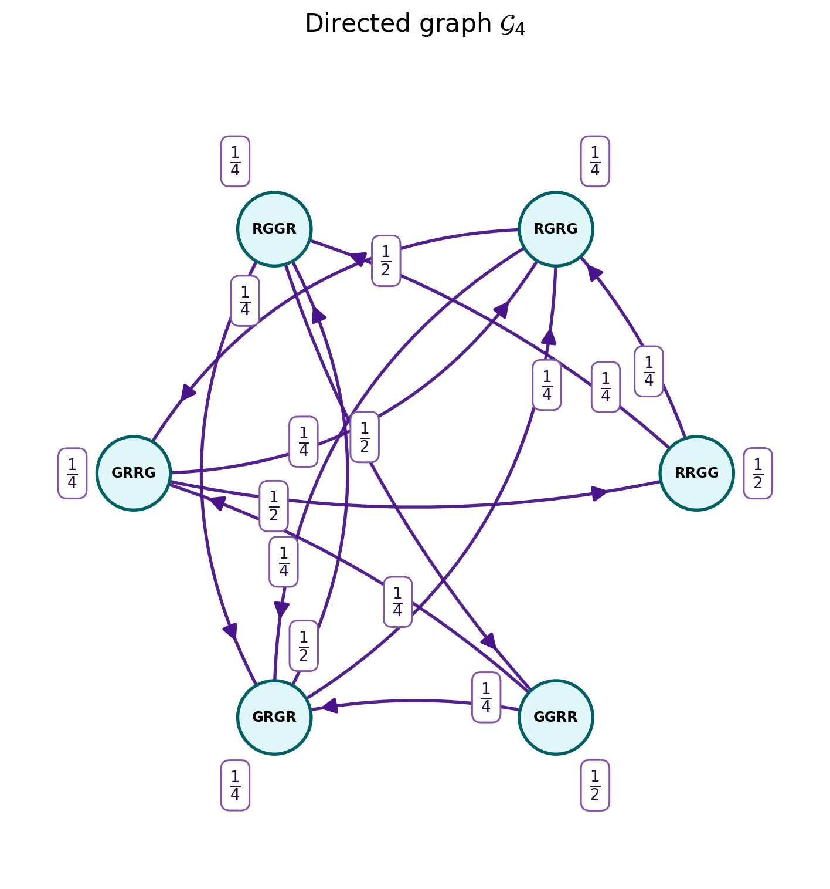

Show code
import networkx as nx
import matplotlib.pyplot as plt
import numpy as np
from matplotlib.patches import FancyArrowPatch, Circle
states = ['RRGG', 'RGRG', 'RGGR', 'GRRG', 'GRGR', 'GGRR']
pos = nx.circular_layout(states)
# Construct the transition matrix directly from the insertion rule.
state_to_idx = {state: i for i, state in enumerate(states)}
P = np.zeros((len(states), len(states)))
for i, state in enumerate(states):
top = state[0]
rest = state[1:]
for slot in range(len(state)):
new_state = rest[:slot] + top + rest[slot:]
P[i, state_to_idx[new_state]] += 1 / len(state)
# Generate graph edges directly from the transition matrix.
edges = [
(states[i], states[j], P[i, j])
for i in range(len(states))
for j in range(len(states))
if P[i, j] > 0
]
assert np.allclose(P.sum(axis=1), 1), "Rows do not sum to 1."
assert np.allclose(P.sum(axis=0), 1), "Columns do not sum to 1."
def format_prob(w):
if np.isclose(w, 1/2):
return r"$\frac{1}{2}$"
if np.isclose(w, 1/4):
return r"$\frac{1}{4}$"
return f"{w:.2f}"
fig, ax = plt.subplots(figsize=(9, 8))
pos = nx.circular_layout(states, scale=1.15)
EDGE_WIDTH = 2.0
EDGE_COLOR = "#4a148c"
ARROW_SIZE = 20
edge_set = {(u, v) for u, v, w in edges}
curves = []
# Draw nodes.
for node in states:
x, y = pos[node]
ax.add_patch(Circle(
(x, y),
radius=0.15,
facecolor="#e0f7fa",
edgecolor="#006064",
linewidth=2,
zorder=4
))
ax.text(
x, y, node,
fontsize=9,
fontweight="bold",
ha="center",
va="center",
zorder=5
)
# Draw every directed transition independently.
for u, v, w in edges:
x1, y1 = pos[u]
x2, y2 = pos[v]
if u == v:
angle = np.arctan2(y1, x1)
loop = FancyArrowPatch(
(x1 + 0.10*np.cos(angle + 0.35),
y1 + 0.10*np.sin(angle + 0.35)),
(x1 + 0.10*np.cos(angle - 0.35),
y1 + 0.10*np.sin(angle - 0.35)),
connectionstyle="arc3,rad=1.8",
arrowstyle="-|>",
mutation_scale=ARROW_SIZE,
color=EDGE_COLOR,
linewidth=EDGE_WIDTH,
zorder=2
)
ax.add_patch(loop)
distance = 0.25 if u in ("RRGG", "GRRG") else 0.32
curves.append({
"u": u, "v": v, "w": w,
"loop": True,
"label_pos": (
x1 + distance*np.cos(angle),
y1 + distance*np.sin(angle)
)
})
continue
reverse = (v, u) in edge_set
# Reciprocal transitions receive separate arcs.
rad = 0.30 if reverse else 0.12
# Draw the curved arc without an arrowhead.
arc = FancyArrowPatch(
(x1, y1),
(x2, y2),
connectionstyle=f"arc3,rad={rad}",
arrowstyle="-",
color=EDGE_COLOR,
linewidth=EDGE_WIDTH,
alpha=0.95,
shrinkA=22,
shrinkB=22,
zorder=2
)
ax.add_patch(arc)
# Quadratic Bezier representation of the arc.
dx = x2 - x1
dy = y2 - y1
cx = (x1 + x2)/2 + rad*dy
cy = (y1 + y2)/2 - rad*dx
ts = np.linspace(0, 1, 101)
curve_x = (
(1-ts)**2*x1
+ 2*(1-ts)*ts*cx
+ ts**2*x2
)
curve_y = (
(1-ts)**2*y1
+ 2*(1-ts)*ts*cy
+ ts**2*y2
)
# Place the arrowhead at exactly 3/4 of the Bezier arc.
t_arrow = 0.85
arrow_x = (
(1-t_arrow)**2*x1
+ 2*(1-t_arrow)*t_arrow*cx
+ t_arrow**2*x2
)
arrow_y = (
(1-t_arrow)**2*y1
+ 2*(1-t_arrow)*t_arrow*cy
+ t_arrow**2*y2
)
tangent_x = (
2*(1-t_arrow)*(cx-x1)
+ 2*t_arrow*(x2-cx)
)
tangent_y = (
2*(1-t_arrow)*(cy-y1)
+ 2*t_arrow*(y2-cy)
)
tangent_norm = np.hypot(tangent_x, tangent_y)
tangent_x /= tangent_norm
tangent_y /= tangent_norm
arrow_length = 0.055
ax.annotate(
"",
xy=(arrow_x, arrow_y),
xytext=(
arrow_x - arrow_length*tangent_x,
arrow_y - arrow_length*tangent_y
),
arrowprops=dict(
arrowstyle="-|>",
color=EDGE_COLOR,
lw=EDGE_WIDTH,
mutation_scale=ARROW_SIZE
),
zorder=3
)
curves.append({
"u": u, "v": v, "w": w,
"loop": False,
"x": curve_x,
"y": curve_y
})
# -------------------------------------------------------
# Collision-aware label placement.
# -------------------------------------------------------
fig.canvas.draw()
renderer = fig.canvas.get_renderer()
node_boxes = []
for node in states:
x, y = pos[node]
center = ax.transData.transform((x, y))
radius = abs(
ax.transData.transform((x + 0.15, y))[0] - center[0]
)
node_boxes.append((
center[0] - radius - 4,
center[1] - radius - 4,
center[0] + radius + 4,
center[1] + radius + 4
))
def boxes_overlap(a, b, padding=3):
return not (
a.x1 + padding < b.x0 or
a.x0 - padding > b.x1 or
a.y1 + padding < b.y0 or
a.y0 - padding > b.y1
)
placed_boxes = []
# Place self-loop labels first.
for item in curves:
if not item["loop"]:
continue
x, y = item["label_pos"]
label = ax.text(
x, y,
format_prob(item["w"]),
fontsize=14,
fontweight="bold",
color="#24103f",
ha="center",
va="center",
bbox=dict(
facecolor="white",
edgecolor="#8054aa",
linewidth=1.1,
boxstyle="round,pad=0.4"
),
zorder=9
)
fig.canvas.draw()
placed_boxes.append(label.get_window_extent(renderer))
# Place non-loop labels using a collision score.
for item in curves:
if item["loop"]:
continue
curve_display = ax.transData.transform(
np.column_stack((item["x"], item["y"]))
)
# Alternate label positions along the 12 directed arcs.
# Cycle through quarter/three-quarter positions and
# alternate between opposite sides of each arc.
placement_pattern = [
(2/5, 1),
(1/4, -1),
(1/3, 1),
(3/4, -1),
(1/7, 1)
]
arc_index = sum(
1 for previous in curves[:curves.index(item)]
if not previous["loop"]
)
t, side = placement_pattern[arc_index % 5]
index = int(t * 100)
point = curve_display[index]
tangent = (
curve_display[min(index + 1, 100)]
- curve_display[max(index - 1, 0)]
)
tangent_norm = np.linalg.norm(tangent)
if tangent_norm < 1e-8:
continue
tangent = tangent / tangent_norm
normal = np.array([-tangent[1], tangent[0]])
candidates = []
for offset in (18, 24, 30, 36, 42):
candidate = point + side * offset * normal
candidates.append((
candidate,
t,
side,
offset
))
best = None
best_score = float("inf")
for candidate, t, side, offset in candidates:
data_position = ax.transData.inverted().transform(
candidate
)
trial = ax.text(
data_position[0],
data_position[1],
format_prob(item["w"]),
fontsize=14,
fontweight="bold",
color="#24103f",
ha="center",
va="center",
bbox=dict(
facecolor="white",
edgecolor="#8054aa",
linewidth=1.1,
boxstyle="round,pad=0.4"
),
zorder=9
)
fig.canvas.draw()
bbox = trial.get_window_extent(renderer)
score = abs(t - 0.5) * 100
# Avoid every node.
for nb in node_boxes:
if (
bbox.x0 < nb[2] and bbox.x1 > nb[0]
and bbox.y0 < nb[3] and bbox.y1 > nb[1]
):
score += 100000
# Avoid previously placed labels.
for pb in placed_boxes:
if boxes_overlap(bbox, pb, padding=5):
score += 100000
# Avoid crossing other arcs.
center = np.array([
(bbox.x0 + bbox.x1)/2,
(bbox.y0 + bbox.y1)/2
])
half_diagonal = 0.5*np.hypot(
bbox.width, bbox.height
)
for other in curves:
if other is item or other["loop"]:
continue
other_display = ax.transData.transform(
np.column_stack((other["x"], other["y"]))
)
distances = np.linalg.norm(
other_display - center, axis=1
)
clearance = np.min(distances) - half_diagonal
if clearance < 9:
score += (9 - clearance)**2 * 20
# Prefer labels close to their own arc.
score += abs(offset - 18)*0.5
if score < best_score:
best_score = score
best = (data_position, bbox)
trial.remove()
if best is None:
continue
data_position, _ = best
label = ax.text(
data_position[0],
data_position[1],
format_prob(item["w"]),
fontsize=14,
fontweight="bold",
color="#24103f",
ha="center",
va="center",
bbox=dict(
facecolor="white",
edgecolor="#8054aa",
linewidth=1.1,
boxstyle="round,pad=0.4"
),
zorder=9
)
fig.canvas.draw()
placed_boxes.append(label.get_window_extent(renderer))
ax.set_title(
"Directed graph $\\mathcal{G}_4$",
fontsize=16,
pad=24
)
ax.set_xlim(-1.65, 1.65)
ax.set_ylim(-1.65, 1.65)
ax.set_aspect("equal")
ax.axis("off")
plt.tight_layout()
plt.show()